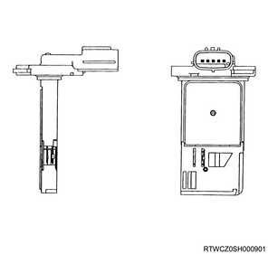
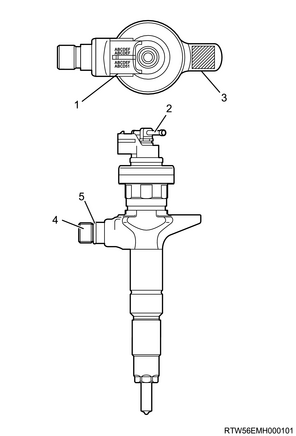

Function, structure, operation of engine (4JK1)
1. Function, structure, operation of engine
ECM
The ECM is designed to withstand normal current draws associated with vehicle operations. Avoid overloading any circuit. When testing for open circuits and short circuits, do not ground or apply voltage to any of the ECU circuits unless instructed to do so. In some cases, these circuits should only be tested using a DMM. The ECM should remain connected to the ECM harness. The ECM mainly controls the following items.
Fuel system control
EGR system control
Glow system control
A/C compressor control
Immobilizer system control
On-board diagnosis for engine control
The ECM constantly monitors the information from various sensors. The ECM controls the systems that affect vehicle performance. The ECM performs the diagnostic function of the system. The ECM can recognize operational problems, alert the driver through the MIL, and store DTCs. DTCs identify the system faults to aid the technician in making repairs.
Note
- ECM input/output
ECM voltage description
The ECM applies the buffer voltage to various switches and sensors. The ECM can do this because resistance in the ECM is so high in value that a test light may not illuminate when connected to the circuit. An ordinary shop voltmeter may not give an accurate reading because the voltmeter input impedance is too low. Use a 10-megaohm input impedance DMM to ensure accurate voltage readings. The input and/or output devices in the ECM include analog-to-digital converters, signal buffers, counters, and special drivers. The ECM controls most components with electronic switches which complete a ground circuit when turned ON.
MIL operation
The MIL is located in the instrument panel cluster. The MIL displays the engine symbol when "ON" is commanded.
The MIL indicates that an engine performance related fault has occurred and vehicle service is required. The following is a list of operation modes for the MIL.
The MIL illuminates when the ignition switch is turned ON and the engine is turned OFF. This is a light test to confirm that the MIL is able to illuminate.
The MIL turns OFF after the engine is started if a diagnostic fault is not present.
The MIL remains illuminated after the engine is started if the ECM detects a fault. A DTC is stored any time the ECM illuminates the MIL due to an engine performance related fault.
Accelerator pedal position sensor
The accelerator pedal position sensor is mounted together with the accelerator pedal. The sensor consists of 2 individual sensors within 1 housing. The ECM uses the accelerator pedal position sensor to determine the amount of acceleration or deceleration that is desired. The accelerator pedal position sensors are hall element type sensors. Each accelerator pedal position sensor provides a different signal to the ECM on each signal circuit, which is relative to the position changes of the accelerator pedal angle. The signal voltage of accelerator pedal position sensor 1 and 2 is low at rest and increases as the pedal is depressed.
- Accelerator pedal position sensor
- Accelerator pedal
Barometric pressure sensor
The barometric pressure sensor is installed onto the air cleaner. The barometric pressure sensor is a transducer that varies voltage according to changes in the barometric pressure. The barometric pressure sensor provides a signal to the ECM on the signal circuit, which is relative to the pressure changes of the barometric pressure. The ECM should detect a low signal voltage at a low barometric pressure at places with high altitude, etc. The ECM should detect high signal voltage at a high barometric pressure. The ECM uses this voltage signal to calibrate the fuel injection quantity and injection timing for altitude compensation.

Boost sensor
The boost sensor is located in the air induction tubing. The boost sensor is a transducer that varies voltage according to changes in the air pressure inside the air tubing. The boost sensor provides a signal to the ECM on the signal circuit, which is relative to the pressure changes in the air tubing. The ECM should detect a low signal voltage at a low boost pressure, such as when the engine load is low. The ECM should detect high signal voltage at a high boost pressure, such as when the engine load is high.
CMP sensor
The CMP sensor is installed on the timing chain sprocket cover at the front of the camshaft idle gear. The CMP sensor detects five projections in total per one engine rotation. Four projections arranged equally every 90° and one reference projection on the timing chain sprocket surface. The CMP sensor is a magnetic resistance element type sensor, which generates a square wave signal pulse.
- Timing chain sprocket
- CMP sensor
- Rotational direction
CKP sensor
The CKP sensor is located on the left-hand of the cylinder block rear section. The sensor rotor is secured to the crankshaft. There are 56 notches spaced 6° apart and a 30° opening. This opening allows for detection of top dead center. The CKP sensor is a magnetic resistance element type sensor, which generates a square wave signal pulse. Detecting the opening from the CKP sensor and one reference projection from the CMP sensor, the ECM determines cylinder No. 1 compression top dead center, and confirms that they correlate with each other.

- CKP sensor
- Sensor rotor
- Rotational direction
Engine coolant temperature sensor
The engine coolant temperature sensor is installed onto the thermostat housing. The engine coolant temperature sensor is a variable resistor and it measures the temperature of the engine coolant. When the engine coolant temperature sensor is cold, the sensor resistance is high. When the engine coolant temperature increases, the sensor resistance decreases. With high sensor resistance, the ECM detects a high voltage on the signal circuit. With lower sensor resistance, the ECM detects a lower voltage on the signal circuit.
Fuel temperature sensor
The fuel temperature sensor is installed on the fuel supply pump.
The fuel temperature sensor is a variable resistor and it measures the temperature of the fuel entering the fuel supply pump. When the fuel temperature sensor is cold, the sensor resistance is high. When the fuel temperature increases, the sensor resistance decreases. With high sensor resistance, the ECM detects a high voltage on the signal circuit. With lower sensor resistance, the ECM detects a lower voltage on the signal circuit.

- Fuel temperature sensor
- FRP regulator
IAT sensor
The IAT sensor is attached between the air cleaner and turbocharger. It is inside the MAF sensor. The IAT sensor is a variable resistor and it measures the temperature of the air entering the engine. When the IAT sensor is cold, the sensor resistance is high. When the air temperature increases, the sensor resistance decreases. With high sensor resistance, the ECM detects a high voltage on the signal circuit. With lower sensor resistance, the ECM detects a lower voltage on the signal circuit.

MAF sensor
The MAF sensor is an air flow meter that measures the amount of air that enters the engine. It is attached between the air cleaner and turbocharger. A small quantity of air that enters the engine indicates deceleration or idle rotation. A large quantity of air that enters the engine indicates acceleration or a high load condition. The MAF sensor assembly consists of an MAF sensor element and an IAT sensor. Both components are exposed to the air flow to be measured. The MAF sensor element measures the inflow air volume through a measurement duct on the sensor housing.
Common rail type electronic control fuel injection system
The common rail system uses an accumulator, which is also called a common rail, to store pressurized fuel and also use injectors including the electric control solenoid valve to inject the pressurized fuel into the combustion chamber. Injection pressure, injection rate and injection timing are controlled by the ECM, and therefore the common rail system can be controlled independently, free from the influence of engine speed and load. This ensures stable injection pressure at all time, particularly in the low engine speed range, and therefore, black smoke specific to diesel engines generated during vehicle starting or acceleration can be significantly reduced. As a result, the cleanliness and volume of exhaust gas are improved and higher output can be achieved.
High pressure control
Enables high pressure injection from low engine speed range.
Optimizes control to minimize particulate matter and NOx emissions.
Injection timing control
Enables finely tuned optimized control in accordance with running conditions.
Injection rate control
Pre injection control that performs a small amount of injection before main injection.
The common rail system consists primarily of a fuel supply pump, fuel rail, injectors, and ECM.
Note
- Fuel system diagram
- Fuel rail
- Pressure limiter
- Fuel leak-off pipe
- Injector
- Fuel return pipe
- Fuel tank
- Fuel tank unit
- Fuel filler cap
- Fuel feed pipe
- Fuel filter with sedimenter
- Clogging switch
- Fuel supply pump
Injector
Electronic control type injectors controlled by the ECM are used. Compared with conventional injection nozzles, a command piston, solenoid valve, etc. are added. ID codes displaying various injector characteristic are laser marked in the connector housing. This system uses injector flow rate information indicated by the ID codes to optimize the injection quantity control. When an injector is newly installed in a vehicle, it is necessary to input the ID codes in the ECM. QR codes or injector flow rate information are used to enhance the injection quantity precision of the injectors. The use of codes enables injection quantity dispersion control throughout all pressure ranges, contributing to improvement in combustion efficiency and reduction in exhaust gas emissions.

- Injector ID code
- Fuel leak-off pipe
- 2D barcode
- Fuel inlet port
- O-ring
Non-injection state
The TWV closes the outlet orifice by means of a spring force, when no current is supplied from the ECM to the solenoid. At this point, the fuel pressure applied to the nozzle leading end is equivalent to the fuel pressure applied through the inlet orifice to the control chamber. As for the force competition in this state, the sum of pressure on the command piston upper surface and nozzle spring force is greater than the pressure applied to the nozzle leading end, and therefore the nozzle is pressed down and the injection hole is closed.
Injection start
When current is supplied from the ECM to the solenoid, the TWV is raised to open the outlet orifice and the fuel flows into the return port. As a result, the nozzle is pressed up along with the command piston by the fuel pressure applied to the nozzle leading end and then the nozzle injection hole opens to inject the fuel.
Injection end
When the ECM finishes supplying power to the solenoid, the TWV comes down and the outlet orifice is closed. As a result, the fuel stops flowing into the return port from the control chamber and the fuel pressure within the control chamber sharply rises. Then, the nozzle is pressed down by the command piston and the nozzle injection hole is closed to stop fuel injection.
Fuel supply pump
The fuel supply pump is the heart of the common rail type electronic fuel injection system. The fuel supply pump is installed at the same location as the conventional injection type pump, which rotates at a 1 to 1 ratio of fuel supply pump to crankshaft speed. The FRP regulator and fuel temperature sensor are part of the fuel supply pump assembly.
Fuel is drawn from the fuel tank via the fuel supply pump by the use of a trochoid type internal feed pump. This feed pump feeds fuel into 2 plunger chambers within the fuel supply pump. Fuel into this plunger chamber is regulated by the FRP regulator which is solely controlled by current supplied from the ECM. No current to the solenoid results in maximum fuel flow whereas full current to the solenoid produces no fuel flow. As the engine rotates, these two plungers produce high pressure in the fuel rail. Since the ECM controls the flow of fuel into the 2 plunger chambers, it therefore controls the quantity and pressure of the fuel supply to the fuel rail. This optimizes performance, improves fuel economy and reduces NOx emissions.
Fuel rail
Along with the employment of a common rail type electronic control fuel injection system, the fuel rail is provided to store high pressure fuel between the fuel supply pump and injectors. The FRP sensor and pressure limiter are installed on the fuel rail. The FRP sensor detects the fuel pressure inside the fuel rail and sends signals to the ECM. Based on these signals, the ECM controls the fuel pressure inside the fuel rail via the FRP regulator of the fuel supply pump. The pressure limiter opens the valve mechanically to relieve the pressure when the fuel pressure inside the fuel rail is excessive.
- Pressure limiter valve
- FRP sensor
FRP sensor
The FRP sensor is installed onto the fuel rail and it detects the fuel pressure in the fuel rail, converts the pressure into a voltage signal, and sends the signal to the ECM. The ECM monitors the FRP sensor signal voltage. Higher fuel rail pressure provides higher signal voltage while lower pressure provides lower signal voltage. The ECM calculates actual fuel pressure from the voltage signal and uses the result in fuel injection control and other control tasks.
Pressure limiter valve
The pressure limiter relieves pressure by opening the valve if abnormally high pressure is generated. The valve opens when pressure in fuel rail reaches approximately 220 MPa (32000 psi), and closes when pressure falls to approximately 50 MPa (7250 psi). Fuel relieved from the pressure limiter returns to the fuel tank.
- Valve
- Valve body
- Valve guide
- Spring
- Housing
- Fuel inlet
- Fuel outlet
FRP regulator
The FRP regulator is installed on the fuel supply pump. The ECM controls the duty ratio of the FRP regulator in order to control the quantity of fuel supplied to the high-pressure plungers. Since only the quantity of fuel that is required for achieving the target fuel rail pressure is drawn in, the drive load of the fuel supply pump is decreased. When current flows to the FRP regulator, variable electromotive force is created in accordance with the duty ratio, moving the solenoid plunger to the right side and changing the opening of the fuel passage and thus regulating the fuel quantity. With the FRP regulator is off, the return spring stretches, completely opening the fuel passage and supplying fuel to the plungers. When the FRP regulator is on, the fuel path is closed by the return spring force. By turning the FRP regulator on and off, the fuel is supplied in an amount corresponding to the actuation duty ratio, and the fuel is discharged by the plungers.
- Fuel temperature sensor
- FRP regulator
Fuel injection quantity control
This control determines the fuel injection quantity by adding coolant temperature, fuel temperature, intake air temperature, barometric pressure and some switch input information corrections to the basic injection quantity calculated by the ECM based on the engine operating conditions. More fuel rate indicates that the engine load is increased as the accelerator pedal is stepped on at constant engine speed.
Combined with high pressure injection of atomized fuel, this control improves exhaust gas and ensures proper fuel consumption. Compared with conventional mechanical governors, an electronic control system provides higher degree of freedom of fuel injection quantity control, thereby presenting high accelerator response.
Starting injection quantity control
At the engine starting, optimum fuel injection quantity is controlled based on the information on the engine speed and coolant temperature. At low temperature, the fuel injection quantity increases. When the engine started completely, this boosted quantity mode at the starting is cancelled and normal running mode is restored.
Idle speed control
A control is made so as to achieve stable idling speed at all time regardless of changes to the engine overtime or engine condition variations. The ECM sets target idling speed and controls the fuel injection quantity according to the engine conditions so that the actual engine speed follows the target idling speed ensuring a stable idling speed.
Idle vibration control
Controls are performed to reduce the engine vibration caused by torque variations between cylinders due to variations in fuel injection quantity of each cylinder or injector performance. The ECM corrects the injection quantity between cylinders based on the rotation signals from the CKP sensor. Normal range of correction quantity between cylinders is within (-5) - 5 mm 3.
EGR system
The EGR system re-circulates a part of the exhaust gas to the intake manifold, and by mixing in inert gas to the intake air, the combustion temperature is lowered and the generation of NOx is suppressed. The EGR control system uses an electronic control system to ensure both drivability and low emission. A control current from the ECM operates a motor to control the lift amount of EGR valve. Also, the actual valve lift amount is fed back to the ECM for more precise control of the EGR amount.
The EGR control starts when the conditions for engine speed, coolant temperature, intake air temperature and barometric pressure are satisfied. Then, the valve opening is calculated according to the engine speed, and the target fuel injection quantity is determined. Based on this valve opening, the drive duty of the motor is provided and the valve is driven accordingly.
- EGR valve
- ECM
- MAF sensor
- Intake throttle valve
EGR valve
The EGR valve is mounted on the inlet manifold. The ECM controls the EGR valve opening based on the engine running condition. The ECM controls the EGR valve by controlling the motor. The motor is controlled based on pulse width modulation signal sent from the ECM via CAN. The EGR valve control is performed by changing the duty ratio from 0 % to an appropriate percentage. When the duty ratio increases, the valve opens. When the duty ratio decreases, the valve closes.
The EGR valve position is detected by the controller installed inside the EGR valve body, and signals are sent to the ECM via CAN. The ECM should detect a low signal voltage at a small lift amount or closed position. The ECM should detect high signal voltage at a large lift amount.
Intake throttle valve
The intake throttle valve is located on the inlet manifold. The ECM controls the intake throttle valve opening based on the engine running condition. The ECM controls the intake throttle valve by controlling the motor. The motor is controlled based on pulse width modulation signal sent from the ECM. The intake throttle valve opening angle is controlled by changing the duty ratio from 0 % to the appropriate percentage. When the duty ratio increases, the valve closes. When the duty ratio decreases, the valve opens.
The intake throttle valve position is detected by the position sensor, and relayed to the ECM. The position sensor provides a signal to the ECM on the signal circuit, which is relative to the position changes of the intake throttle valve. The ECM should detect a low signal voltage at a small opening amount or closed position. The ECM should detect high signal voltage at a large opening amount.
Turbocharger
The turbocharger is used to increase the amount of air that enters the engine cylinders. This allows a proportional increase of fuel to be injected into the cylinders, resulting in increased power output, more complete combustion of fuel, and increased cooling of the cylinder heads, pistons, valves, and exhaust gas. This cooling effect helps extend engine life.
Heat energy and pressures in the engine exhaust gas are utilized to drive the turbine. Exhaust gas is directed to the turbine housing. The turbine housing acts as a nozzle to direct the shaft wheel assembly.
Since the compressor wheel is attached directly to the shaft, the compressor wheel rotates at the same speed as the turbine wheel. Clean air from the air cleaner is drawn into the compressor housing and wheel. The air is compressed and delivered through a crossover pipe to the engine air intake manifold, then into the cylinders.
- Exhaust gas
- Turbine wheel
- Compressor wheel
- Air cleaner
- Intercooler
The amount of air pressure rise and air volume delivered to the engine from compressor outlet is regulated by a turbocharger nozzle control actuator indirectly. The position of the turbocharger nozzles is controlled by the ECM. The ECM utilizes the turbocharger nozzle control solenoid valve and the boost pressure sensor to control the turbocharger nozzles. When the engine is not under load, the turbocharger nozzles are in open position A, or the non-boost condition. When the engine is under load, the ECM commands the control solenoid valve to close the turbocharger nozzles as in B, which increases the boost. The ECM changes the boost according to the load requirements of the engine. The ECM uses pulse width modulation on the control circuit to open and control the solenoid valve.
The intercooler also helps the performance of the diesel. Intake air is drawn through the air cleaner and into the turbocharger compressor housing. Pressurized air from the turbocharger then flows forward through the intercooler located in the front of the radiator. The air from the intercooler then flows into the intake manifold.
The intercooler is a heat exchange device that uses ambient airflow to dissipate heat from the intake air. Compression by the turbocharger causes the intake air to heat up. Decreasing the intake air temperature provides a denser intake charge into the same space, resulting in increased engine efficiency and power.
- Turbocharger nozzle control actuator
- Nozzle
Cylinder block
The cylinder block is cast iron, and has a highly rigid structure with appropriate rib placement.
Piston
The pistons are thermal flow pistons made of an aluminum alloy and cast struts, and the combustion chamber is a spherical re-entrant type.
Cylinder heads
The heads are aluminum alloy. They have four valves per cylinder. Tighten the head bolts using the plastic region rotational angle tightening method. The plastic region rotational angle tightening method further improves reliability and durability.
Connecting rod cap bolt
Tighten the mounting bolt of the connecting rod cap using the plastic region rotational angle tightening method.
Fuel filter with sedimenter
This is a fuel filter that has a sedimenter to remove moisture content by using the difference of the relative density of light diesel oil and water, and has an indicator which shows water accumulation.

- Clogging switch
- Fuel filter element
- Sedimenter switch
Cooling system
The cooling system is a force-circulation system, and its main components are the water pump, the thermostat, the cooling fan, and the radiator.
To quickly increase cold engine coolant temperature for smooth engine operation, the coolant is circulated by the water pump and the thermostat through the bypass pipe and back to the cylinder body. At this time, the coolant does not circulate through the radiator.
When the coolant temperature reaches the specified value, the thermostat begins to open to gradually increase the amount of coolant circulating through the radiator.
When the coolant temperature reaches the specified value, the thermostat is fully opened. Then all of the coolant circulates through the radiator to cool the engine effectively.
- Thermostat
- Turbocharger
- Cylinder head
- Oil cooler
- Heater (Models with heater only)
- Cylinder block
- Water pump
- Cooling fan
- Radiator
- Reserve tank
Water pump
The centrifugal water pump performs forced circulation of the coolant through the cooling system.
The water pump cannot be disassembled.
Thermostat
The thermostat is a wax pellet type.
Radiator
The radiator is a tube type with corrugated fins. To raise the boiling point of the coolant, a pressurized radiator cap is attached. The open valve pressure of the radiator cap is 93.3 - 122.7 kPa (0.95 - 1.25 kg/cm2 / 13.5 - 17.8 psi).
Opening/closing mechanism of the radiator cap is double-action.
Manual transmission vehicles are not equipped with an oil cooler.
Caution
- When removing the radiator cap, do not pull it by force, but loosen it until it cannot rotate further.
- To install the cap, turn the radiator cap until it does not turn.

Starting system
The starting system is composed of the batteries, starter, ignition switch, inhibitor switch (for A/T only), starter relay, etc. Each of these main components are wired as shown in the starter circuit diagram.
- Pinion clutch
- Ring gear
- Shift lever
- Magnetic switch
- S-terminal
- B-terminal
- Inhibitor switch (for A/T vehicles only)
- Starter relay
- Ignition switch
- Battery
- Armature
Note
- Starter circuit diagram
Starter
The starter is a magnetic shift type, inner gearing mesh method reduction starter.
The contact point of the magnetic switch closes and the armature rotates when the ignition switch is turned ON. At the same time, the plunger is drawn in and the pinion is pushed to the front via the shift lever to mesh with the ring gear, and when the ring gear rotates the engine starts. After the engine starts, the plunger returns, the pinion separates from the ring gear, and the armature stops rotating when the ignition switch is turned OFF. When the engine rotation increases faster than the pinion, the pinion will turn in reverse, but because the pinion is idling, it does not drive the armature.
- Lead wire
- Bolt
- Magnetic switch assembly
- Torsion spring
- Plunger
- Dust cover
- Magnetic switch
- Screw
- Through bolt
- Rear cover
- Motor assembly
- Brush holder
- Yoke
- Armature
- Bolt
- Bearing retainer
- Pinion assembly
- Pinion stopper clip
- Pinion stopper
- Return spring
- Pinion shaft
- Clutch
- Dust cover
- Shift lever
- Gear case
Note
- Ignition switch
Charging system
The charging system is an IC integral regulator charging method. The main components are connected as shown in the circuit diagram. The regulator is an integrated solid-state type regulator. It is built into the generator, and installed onto the rear end cover together with the brush holder assembly.
Generator maintenance such as adjusting the voltage is unnecessary.
There are 12 diodes in the rectifier connected to the stator coil. They convert alternating current voltage into direct current voltage. The direct current voltage is connected to the generator output terminal.
The generator cannot be disassembled.
Note
- Generator
Note
- Circuit diagram
- Stator coil
- IC regulator
- Battery
- Rotor coil
Exhaust system
The main components consist of the front exhaust pipe, exhaust silencer, and rear exhaust pipe.
- Front hanger rubber
- Front exhaust pipe
- Silencer hanger rubber
- Rear hanger rubber
- Rear exhaust pipe
- Rear hanger rubber
- Exhaust silencer
- Silencer hanger rubber
Lubrication system
A full-flow bypass integrated filter element, water-cooling oil cooler, and piston coolant oil jet are adopted for the lubrication system.
Oil flows through the water cooling oil cooler and around each sliding section from the oil gallery for lubrication.
Note
- Engine control component location diagram
- Accelerator pedal position sensor
- Barometric pressure sensor
- No.1 cylinder injector
- No.2 cylinder injector
- No.3 cylinder injector
- No.4 cylinder injector
- CMP sensor
- Engine coolant temperature sensor
- CKP sensor
- Boost sensor
- Turbocharger control solenoid valve
- EGR valve
- Intake throttle valve
- Common rail
- Pressure limiter valve
- FRP sensor
- FRP regulator
- Fuel temperature sensor
- Swirl control solenoid valve
- Swirl control actuator
- MAF sensor
- Vehicle speed sensor, MT specification
- Vehicle speed sensor, AT specification 2WD
- Vehicle speed sensor, 4WD

- ECM
Note
- Vacuum hose routing diagram
- Swirl control solenoid valve
- Actuator control vacuum hose
- Swirl control actuator
- Brake booster
- Vacuum pipe
- Vacuum pump
- Actuator control vacuum hose
- Air cleaner
- Turbocharger nozzle control actuator
- Solenoid valve ventilation hose
- Turbocharger nozzle control solenoid valve
Note
- General wiring diagram
ECM pin layout (81 pin connector）
| PIN No. | Pin function |
| A1 | ECM power ground |
| A2 | Battery voltage |
| A3 | ECM power ground |
| A4 | ECM power ground |
| A5 | Battery voltage |
| A6 | MIL control |
| A7 | Not used |
| A8 | Not used |
| A9 | Not used |
| A10 | Glow plug relay control |
| A11 | Not used |
| A12 | A/C compressor relay control |
| A13 | Not used |
| A14 | Starter cut relay control |
| A15 | Not used |
| A16 | Not used |
| A17 | Not used |
| A18 | Not used |
| A19 | VSS signal |
| A20 | APP sensor 1 shield ground |
| A21 | ECM main relay control |
| A22 | MAF sensor low reference |
| A23 | Not used |
| A24 | Ignition voltage |
| A25 | Cruise main switch signal |
| A26 | Clutch pedal switch 1 signal |
| A27 | Brake switch 2 signal |
| A28 | Not used |
| A29 | Ground |
| A30 | Clutch pedal switch 2 signal |
| A31 | Not used |
| A32 | Not used |
| A33 | Not used |
| A34 | Thermo relay signal |
| A35 | Not used |
| A36 | Not used |
| A37 | Not used |
| A38 | Not used |
| A39 | APP sensor 2 shield ground |
| A40 | ECM main relay control |
| A41 | APP sensor 1 and cruise control switch low reference |
| A42 | APP sensor 1 5 volts reference |
| A43 | ECM signal ground |
| A44 | Not used |
| A45 | Brake switch 1 signal |
| A46 | Ignition switch signal |
| A47 | Not used |
| A48 | Not used |
| A49 | Not used |
| A50 | P or N range switch (A/T) Neutral switch (M/T) |
| A51 | Not used |
| A52 | Diagnostic request switch |
| A53 | Not used |
| A54 | Not used |
| A55 | Not used |
| A56 | Not used |
| A57 | Not used |
| A58 | CAN high signal |
| A59 | MAF sensor shield ground |
| A60 | APP sensor 2, BARO sensor and IAT sensor low reference |
| A61 | APP sensor 2 and BARO sensor 5 volts reference |
| A62 | ECM signal ground |
| A63 | APP sensor 1 signal |
| A64 | APP sensor 2 signal |
| A65 | Cruise control switch signal |
| A66 | Not used |
| A67 | Not used |
| A68 | Not used |
| A69 | MAF sensor signal |
| A70 | Not used |
| A71 | BARO sensor signal |
| A72 | IAT sensor signal |
| A73 | Not used |
| A74 | Not used |
| A75 | Not used |
| A76 | Not used |
| A77 | Not used |
| A78 | CAN low signal |
| A79 | Not used |
| A80 | Not used |
| A81 | ECM case ground |
ECM pin layout (40 pin connector）
| PIN No. | Pin function |
| B1 | FRP sensor signal |
| B2 | FT sensor signal |
| B3 | ECT sensor signal |
| B4 | Intake throttle position sensor signal |
| B5 | Turbocharger control solenoid valve low side |
| B6 | CMP sensor and FRP sensor 5 volts reference |
| B7 | Swirl control solenoid valve control |
| B8 | FRP regulator low side |
| B9 | FRP sensor signal |
| B10 | Boost pressure sensor signal |
| B11 | Not used |
| B12 | Not used |
| B13 | Not used |
| B14 | CKP sensor, intake throttle position sensor and boost pressure sensor 5 volts reference |
| B15 | Turbocharger control solenoid valve high side |
| B16 | FRP regulator low control |
| B17 | CMP sensor signal |
| B18 | Not used |
| B19 | CMP sensor and FRP sensor shield ground |
| B20 | CMP sensor and FRP sensor low reference |
| B21 | Not used |
| B22 | Not used |
| B23 | Intake throttle control low side |
| B24 | FRP regulator control high side |
| B25 | Fuel filter switch signal |
| B26 | CKP sensor signal |
| B27 | CKP sensor and boost pressure sensor shield ground |
| B28 | CKP sensor, intake throttle position sensor, boost pressure sensor, FT sensor and ECT sensor low reference |
| B29 | Not used |
| B30 | Not used |
| B31 | Intake throttle drive voltage |
| B32 | FRP regulator control high side |
| B33 | Not used |
| B34 | Not used |
| B35 | Common 2 (Cylinder #2 and #3) fuel injector charge voltage |
| B36 | Cylinder #4 fuel injector control |
| B37 | Cylinder #2 fuel injector control |
| B38 | Cylinder #1 fuel injector control |
| B39 | Cylinder #3 fuel injector control |
| B40 | Common 1 (Cylinder #1 and #4) fuel injector charge voltage |
2. Engine number
Note
- Engine number stamping position
- Engine model
- Engine number